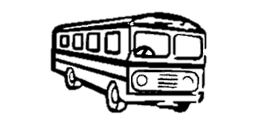
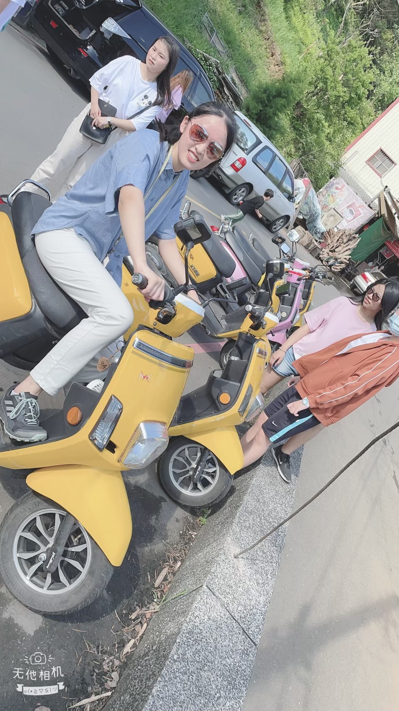

火車
⦿火車前往平溪支線必須搭至瑞芳車站，再換車到平溪支線。
台北 =⟩ 瑞芳 ， 基隆 =⟩ 八堵 =⟩ 瑞芳
⦿使用台鐵時刻表查詢系統查詢火車出發/到站時間查詢。
公車
⦿木柵平溪線化身「健康巴士」，串連深坑、石碇、平溪的 11個特色站
，主打探索在地山林步道、秘境瀑布與在地品味，
從身心靈健康到環境健康，體驗悠遊深石平的健康行旅！
⦿也可至台北捷運各站購買北北基好玩卡交通暢遊一日券$180/張
全程單趟 45元

電動車
可至十分車站尋找電動車店家，
接下來就是想騎去哪就騎去那
記得不要騎太快，不然會出事
